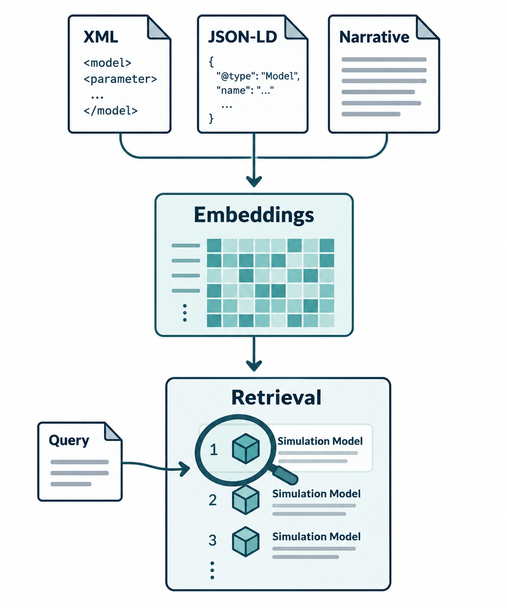
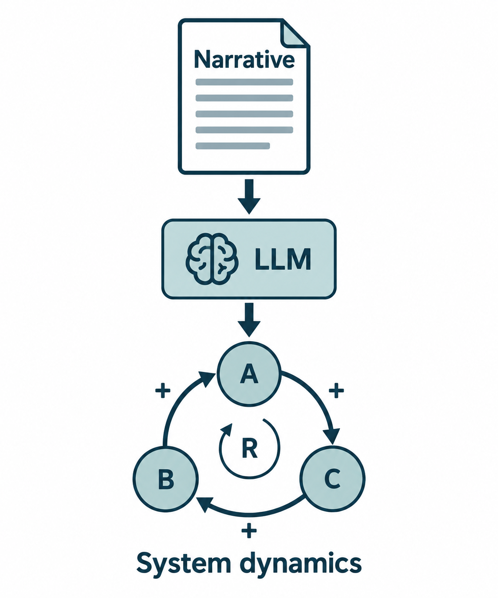
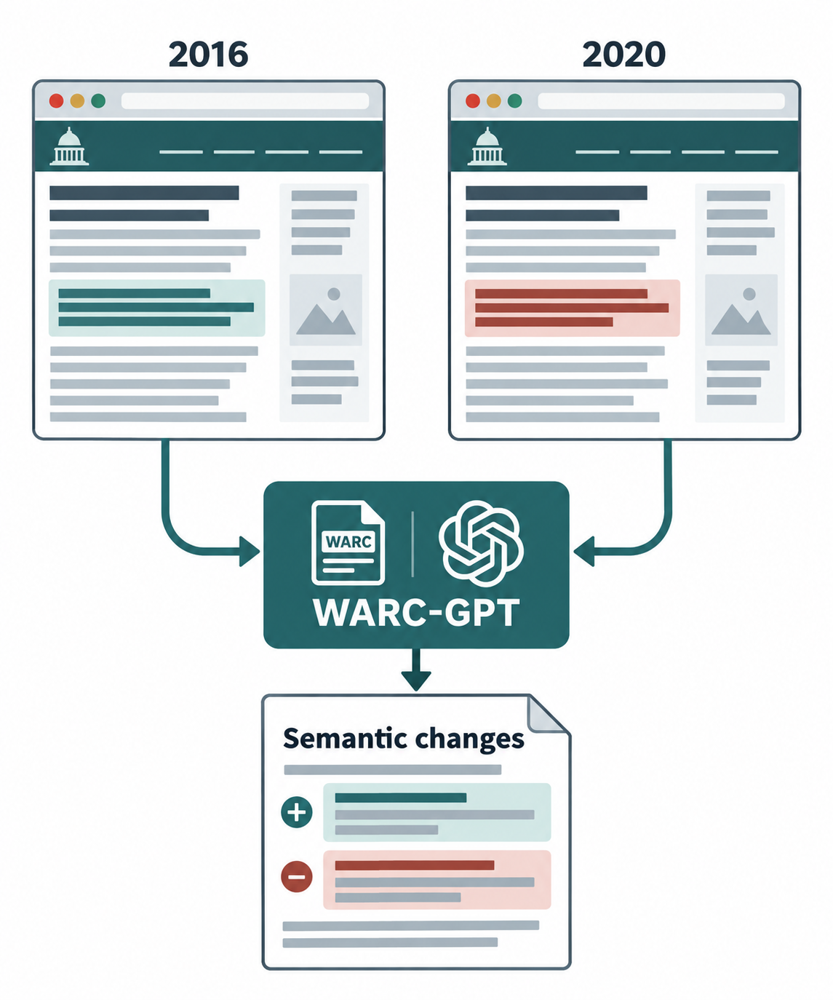
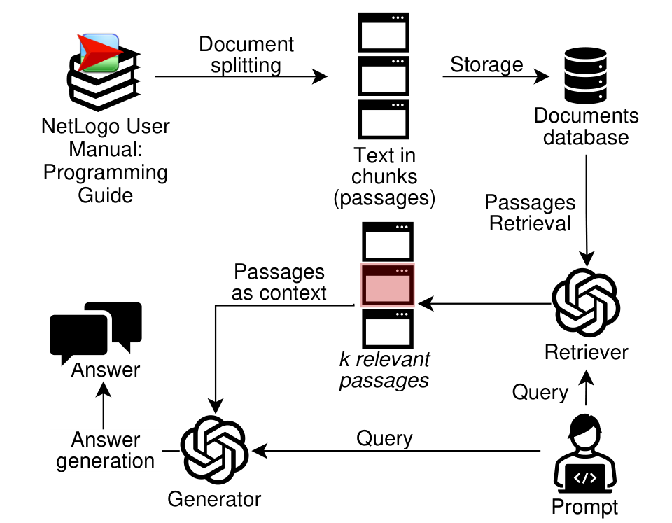
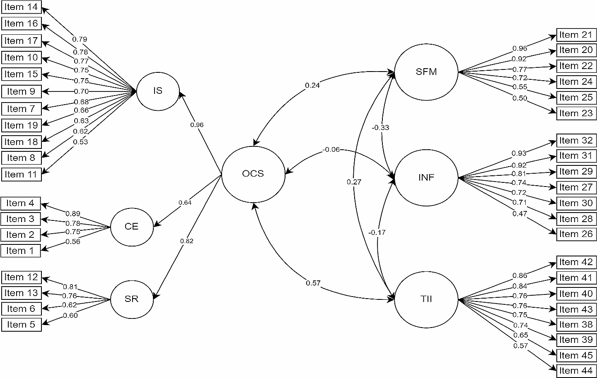

Reconstructing Migratory Movements from Ottoman Census Registers: An AI Driven Approach
Journal of Digital History
Publications
Work across artificial intelligence, modeling and simulation, web science, and human mobility.
The bibliography / 09 contributions
Google Scholar9 publications
Journal of Digital History
2026 Modeling and Simulation for Autonomous Systems Conference

2026 Winter Simulation Conference

Proceedings of the 2025 Winter Simulation Conference
This paper investigates how large language models (LLMs) can support the transformation of narrative descriptions into system archetypes. We tested prompting strategies including zero-shot and guided reasoning approaches, to assess LLM's ability to identify key variables, causal relationships, and feedback structures.

2024 IEEE International Conference on Big Data (BigData) , IEEE
This work explores how GPT-4o can support the detection of semantic changes in archived web pages.

2024 Winter Simulation Conference (WSC) , IEEE
This paper studies how few-shot learning and retrieval-augmented generation improve GPT-3.5's ability to generate NetLogo code for agent-based models.

Social Indicators Research , 174(2), 697–720
A validated survey tool for measuring community support for migration during rapid and sudden arrivals of people.
Conference contribution (not peer reviewed)
2023 IEEE International Humanitarian Technology Conference (IHTC) , IEEE
Try a different search or reset the filters to browse the full bibliography.
Looking for more context? Explore the research areas behind these publications.